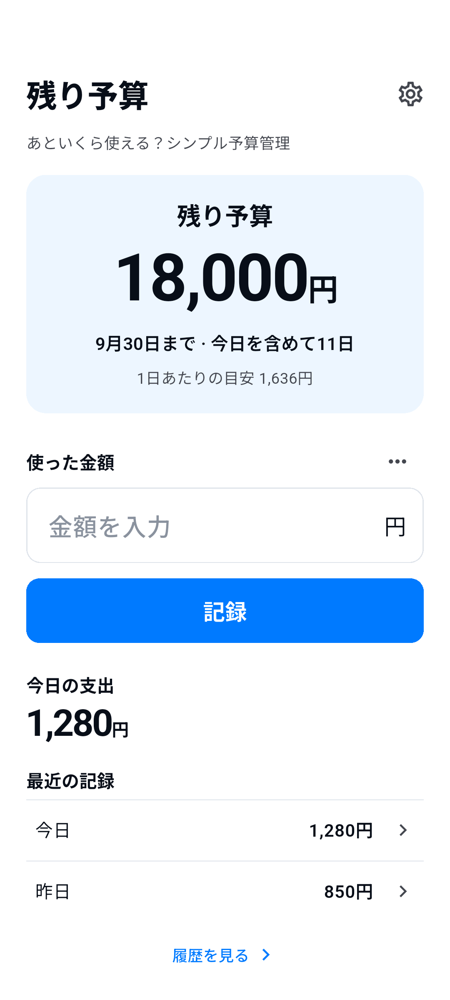

予算額・期間・通貨を設定します。

使い方
使う。記録する。残りが分かる。
ホームで支出を記録します。メモは任意です。
履歴で修正・削除・返金の追加ができます。
次の予算は自分で開始します。前の予算は履歴に残ります。
必要なものだけ
ひとつの予算を、分かりやすく。
- 残り予算
- 残額は登録済みの記録に基づく目安です。銀行残高でも、必ず使ってよい金額でもありません。返金は予算を戻す操作で、収入管理ではありません。期間の自動更新・繰越はしません。
- 6つの言語・8つの通貨
- 日本語 / English / 한국어 / 简体中文 / Español / Français
JPY / USD / EUR / KRW / CNY / GBP / CAD / AUD - 広告とプライバシーの選択
- 無料で、ホーム下部に小さなバナー広告を1枚表示します。入力・編集時は非表示です。必要な場合は設定からプライバシーの選択を変更できます。同意や通信の失敗で記録機能が使えなくなることはありません。
端末内の記録
アカウントは不要。
予算額・通貨・期間・支出・返金・メモ・設定は、アプリの機能提供のため端末内に保存します。アカウント登録や独自クラウド同期はありません。これらの記録を当社サーバーや広告SDKへ送信せず、解析SDKも追加していません。
データは端末に保存されます。OSバックアップや機種移行に含まれる場合がありますが、復元は保証しません。アプリ削除でデータが消える場合があります。アカウントやクラウド復元サービスはありません。
プライバシーポリシー →